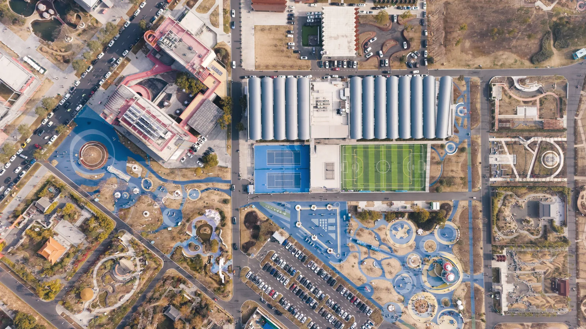

Boundary & cadastral survey
Identify parcel limits and prepare survey information for land documentation and boundary decisions.
Typical outputs Boundary plan · coordinates · survey records
Boundary, topographic and engineering surveys for land, design and construction.
Choose by project need. Scope, field method and deliverables are confirmed before mobilisation.
Identify parcel limits and prepare survey information for land documentation and boundary decisions.
Capture terrain, levels and visible site features for planning, feasibility and design.
Transfer design positions and levels to site, establish control and record completed work.
Organise locations, attributes and project records into useful maps and spatial datasets.
Use satellite or aerial imagery to examine land cover, development and change across an area.
Review available spatial information and define the survey or mapping work required for the next decision.
Swipe to compare services
Select the decision you need to make. The site will suggest a practical survey route and add it to your project brief.
Confirm parcel identity, corner positions and the survey information needed for a land or boundary decision.
The work is only complete when field observations become clear information for the next professional or decision-maker.

Swipe to view field, aerial and mapping examples
These illustrations show common output types. The exact content and file format are agreed for each project.
A controlled representation of parcel geometry, corner points, bearings, distances and relevant survey information.
Send the location, purpose, available records and required output.
Field method, access, deliverables, timing and commercial terms are agreed.
Field observations, control and checks are completed for the agreed purpose.
Plans, coordinates, files or reports are delivered in the agreed format.
Hambare provides surveying, engineering measurement, mapping, remote sensing and GIS support from its operational base in Iseyin, Oyo State. Registered Surveyor Hamid Adebare is the named survey contact for project enquiries.
Download capability statementComplete the essentials below. A structured message will be prepared for WhatsApp.
The video uses sample information and shows the complete route from selecting a service to opening the prepared WhatsApp message.
Choose the survey service that most closely matches the decision you need to make. Select “Not sure yet” when the correct service is unclear. Enter the project location, stage and approximate size. Add the output you expect, any records already available, your preferred timing and site-access information. Explain what the survey will support, then provide your name and WhatsApp number. Select “Prepare WhatsApp brief,” review the message, open WhatsApp, and attach any plans, title documents, drawings or site photographs before sending.
Call or send the location, purpose and available documents on WhatsApp.